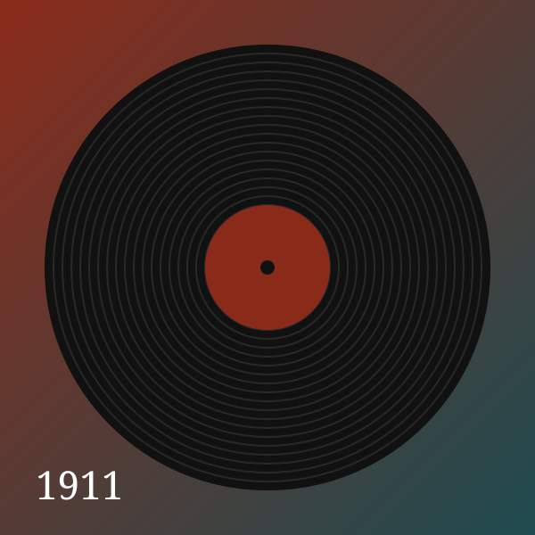

Mlle Mariette, “El sentenciado del bajá” (Zonophone X-103831, 1911)

Background: The Hebrew University / Jewish Music Research Centre commentary identifies this as a truncated version of the Sephardic romance “El sentenciado del bajá” (CMP H23), known in only a few printed and recorded sources in longer versions. It explains that the protagonist is sentenced to death after refusing the advances of an anonymous “Turk”; in some versions the protagonist is female, in others male. The fuller romance develops into a dialogue with the protagonist's mother, who is asked to save the condemned child but cannot help. The commentary explicitly notes that this dialogue is missing from Mlle Mariette's recording.